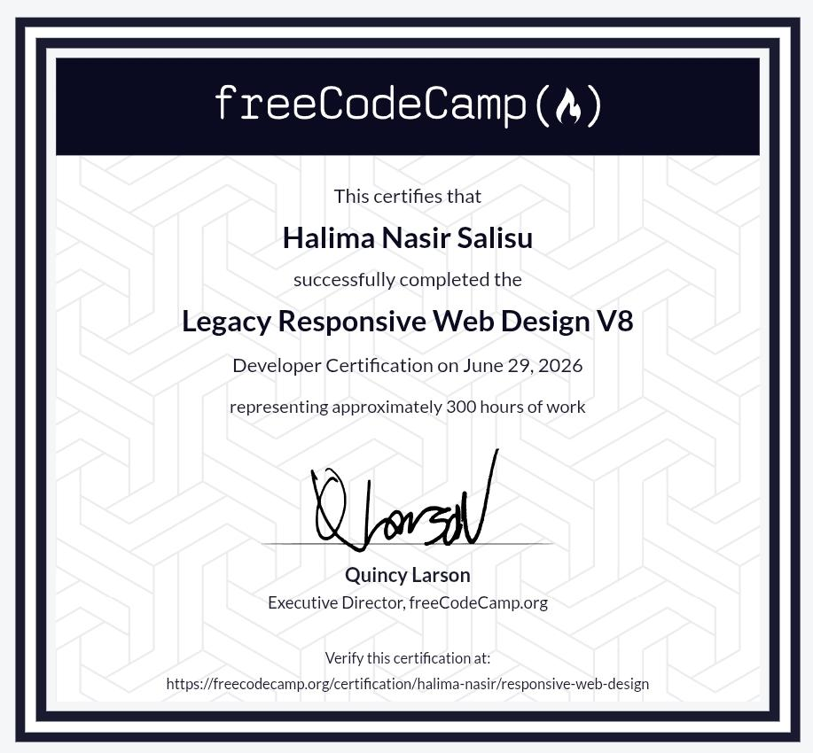

Halima Nasir Salisu
Building functional, responsive, and data-driven web applications.
About Me
Hello! I am Halima, a passionate software engineering student deeply invested in building clean, optimized, and highly functional digital environments. My path in technology is fueled by a desire to bridge technical logic with seamless user experiences.
Currently in my 200 Level of Software Engineering studies at Northwest University, Kano (YUMSUK), I am dedicating my time to mastering both frontend architectures and backend systems. I thrive on breaking down complex programming problems and assembling them into efficient, responsive web solutions.
Educational Timeline
B.Sc. Software Engineering (In Progress)
Northwest University, Kano
Deepening my understanding of core computer science fundamentals, data structures, algorithms, and engineering methodologies tailored for modern applications.
National Diploma (ND) in Computer Software Engineering Technology
Innovation and Vocational Enterprise Institute, Kano State Polytechnic
Acquired practical, hands-on exposure to development life cycles, foundational technical logic, and system configurations.
Technical Competencies
Instead of typical framework icons, here is a breakdown of where my functional strengths lie as I grow as an engineer.
Featured Work
01. Personal Engineering Portfolio
HTML5 / CSS3 / Native JavaScript
This platform serves as my foundational production project. Built purely from the ground up without heavy external libraries, it models modular UI structures, responsive flex layouts, dynamic DOM-driven routing, and custom layout styling.
Verified Certifications

Responsive Web Design
Issued by freeCodeCamp
An intensive curriculum focusing on developer best practices, accessible design patterns, media queries, flexbox grid structures, and raw CSS layout controls.
Verify Credential LiveEcosystem & Deployment Tools
Version Control
GitHub
Frontend Deployment
Vercel
Static Hosting Services
Netlify
Cloud Hosting Environments
Render
My Approach to Code
"Writing code is more than making components work; it is about architecture, longevity, and writing programs that are accessible to anyone, on any screen."
I value semantic layouts over bloated framework boilerplate. I believe software engineering is an iterative discipline, meaning that clean code structures written today prevent architectural friction tomorrow. My focus rests heavily on maintainability and raw performance.
Growth Framework
Master complex asynchronous patterns and API building with Node.js and Express to strengthen backend capabilities.
Integrate relational and non-relational database architectures securely into active web applications.
Contribute open-source software updates to accessible local technologies within Nigeria's evolving dev ecosystem.
Get In Touch
Let's collaborate on software engineering initiatives or development projects.